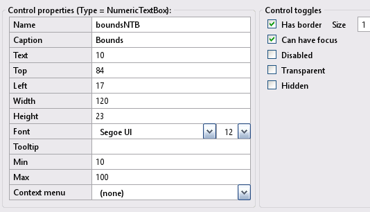
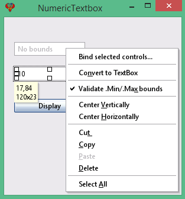

Toolbox Numeric Textbox
NumericTextBox controls in an InForm application are designed for receiving input from the user, restricted exclusively to numerical values.
Numeric Textbox control
Create a new Numeric Textbox control by clicking the Numeric Textbox icon in the Toolbox. The newly created control will be displayed in the preview window; allowing you to move it around to meet your design requirements. Edit the Numeric Textbox properties as necessary.
4) Numeric Textbox Properties:
Numeric Textbox examples: Preview window.
Note: Numeric TextBox properties will reflect the highlighted control selected in the preview window, enabling you to customize it as needed.
NumericTextBox controls are used to receive input from the user, allowing only numerical values. There are two modes for NumericTextBox controls: with or without bounds.
Without bounds.
During design time in the preview window, right-click a NumericTextBox control, and ensure the Allow min/max bounds item is unchecked from the pop-up menu.
With bounds.
During design time in the preview window, right-click a NumericTextBox control, and ensure the Allow min/max bounds item is checked from the pop-up menu. Then, in the properties window, specify the minimum and maximum values allowed, and InForm automatically validates user input.
Note:
When the Allow min/max bounds item is unchecked, the properties min and max in the properties window are hidden. When checked, these properties become visible and are preset to INTEGER limits (-32768 to 32767).
Read:
To read back what was typed into a Numeric TextBox, you can either use the Text array:
Var$ = Text(ControlID)Or the .Value property:
Value% = Control(ControlID).ValueThe SetCaption property and Caption array can be used to display a caption inside the input box. However, it's important to note that the caption becomes hidden as soon as the user starts entering numbers.
Caption(yearNTB) = "Enter year"Numeric Textbox examples refer to the above image.
Specification: Let the numeric textbox have the following design specification:
- Add two numeric textboxes as shown above.
- The first one has no bounds.
- The second one is bounded with a minimum value of 10 and a maximum value of 100.
- Include a button that, when clicked, displays the entered content of these numeric textboxes.
Implimenation: Here are the solutions for the provided design specifications:
- Button click should use the subroutine __UI_Click.
- For additional details, refer to NumericTextboxExample.bas
- During the layout stage, save the project by selecting File -> Save Project As, and then enter the name NumericTextboxExample
Basic file NumericTextboxExample.bas
': This program uses
': InForm - GUI library for QB64 - v1.5
': Fellippe Heitor, 2016-2024 - fellippe@qb64.org - @fellippeheitor
': https://github.com/FellippeHeitor/InForm
'-----------------------------------------------------------
Option _Explicit
': Controls' IDs: ------------------------------------------------------------------
Dim Shared NumericTextbox As Long
Dim Shared NoBoundsNTB As Long
Dim Shared boundsNTB As Long
Dim Shared DisplayBT As Long
': External modules: ---------------------------------------------------------------
'$INCLUDE:'InForm\InForm.bi'
'$INCLUDE:'InForm\xp.uitheme'
'$INCLUDE:'NumericTextboxExample.frm'
': Event procedures: ---------------------------------------------------------------
Sub __UI_BeforeInit
End Sub
Sub __UI_OnLoad
End Sub
Sub __UI_BeforeUpdateDisplay
'This event occurs at approximately 60 frames per second.
'You can change the update frequency by calling SetFrameRate DesiredRate%
End Sub
Sub __UI_BeforeUnload
'If you set __UI_UnloadSignal = False here you can
'cancel the user's request to close.
End Sub
Sub __UI_Click (id As Long)
Dim NoBoundsSTR As String ' <---
Dim BoundsSTR As String ' <---
Dim FullTextSTR As String ' <---
Dim Value1 As Integer ' <---
Dim Value2 As Integer ' <---
Select Case id
Case NumericTextbox
Case NoBoundsNTB
Case boundsNTB
Case DisplayBT
NoBoundsSTR = "No bounds = " + Text(NoBoundsNTB) + Chr$(10) ' <---
BoundsSTR = "Bounds = " + Text(boundsNTB) ' <---
FullTextSTR = NoBoundsSTR ' <---
FullTextSTR = FullTextSTR + BoundsSTR ' <---
_MessageBox "Read operation str", FullTextSTR ' <---
'===Example using .value
Value1 = Control(NoBoundsNTB).Value ' <---
Value2 = Control(boundsNTB).Value ' <---
NoBoundsSTR = "No bounds = " + Str$(Value1) + Chr$(10) ' <---
BoundsSTR = "Bounds = " + Str$(Value2) ' <---
FullTextSTR = NoBoundsSTR ' <---
FullTextSTR = FullTextSTR + BoundsSTR ' <---
_MessageBox "Read operation value", FullTextSTR ' <---
End Select
End Sub
Sub __UI_MouseEnter (id As Long)
Select Case id
Case NumericTextbox
Case NoBoundsNTB
Case boundsNTB
Case DisplayBT
End Select
End Sub
Sub __UI_MouseLeave (id As Long)
Select Case id
Case NumericTextbox
Case NoBoundsNTB
Case boundsNTB
Case DisplayBT
End Select
End Sub
Sub __UI_FocusIn (id As Long)
Select Case id
Case NoBoundsNTB
Case boundsNTB
Case DisplayBT
End Select
End Sub
Sub __UI_FocusOut (id As Long)
'This event occurs right before a control loses focus.
'To prevent a control from losing focus, set __UI_KeepFocus = True below.
Select Case id
Case NoBoundsNTB
Case boundsNTB
Case DisplayBT
End Select
End Sub
Sub __UI_MouseDown (id As Long)
Select Case id
Case NumericTextbox
Case NoBoundsNTB
Case boundsNTB
Case DisplayBT
End Select
End Sub
Sub __UI_MouseUp (id As Long)
Select Case id
Case NumericTextbox
Case NoBoundsNTB
Case boundsNTB
Case DisplayBT
End Select
End Sub
Sub __UI_KeyPress (id As Long)
'When this event is fired, __UI_KeyHit will contain the code of the key hit.
'You can change it and even cancel it by making it = 0
Select Case id
Case NoBoundsNTB
Case boundsNTB
Case DisplayBT
End Select
End Sub
Sub __UI_TextChanged (id As Long)
Select Case id
Case NoBoundsNTB
Case boundsNTB
End Select
End Sub
Sub __UI_ValueChanged (id As Long)
Select Case id
End Select
End Sub
Sub __UI_FormResized
End Sub
'$INCLUDE:'InForm/InForm.ui'
Form file NumericTextboxExample.frm
': This form was generated by
': InForm - GUI library for QB64 - v1.5
': Fellippe Heitor, 2016-2024 - fellippe@qb64.org - @fellippeheitor
': https://github.com/FellippeHeitor/InForm
'-----------------------------------------------------------
SUB __UI_LoadForm
DIM __UI_NewID AS LONG, __UI_RegisterResult AS LONG
__UI_NewID = __UI_NewControl(__UI_Type_Form, "NumericTextbox", 300, 300, 0, 0, 0)
__UI_RegisterResult = 0
SetCaption __UI_NewID, "NumericTextbox"
Control(__UI_NewID).Font = SetFont("segoeui.ttf", 12)
Control(__UI_NewID).HasBorder = False
__UI_NewID = __UI_NewControl(__UI_Type_TextBox, "NoBoundsNTB", 120, 23, 17, 42, 0)
__UI_RegisterResult = 0
SetCaption __UI_NewID, "No bounds"
Control(__UI_NewID).HasBorder = True
Control(__UI_NewID).Min = -32768
Control(__UI_NewID).Max = 32767
Control(__UI_NewID).CanHaveFocus = True
Control(__UI_NewID).BorderSize = 1
Control(__UI_NewID).NumericOnly = True
__UI_NewID = __UI_NewControl(__UI_Type_TextBox, "boundsNTB", 120, 23, 17, 84, 0)
__UI_RegisterResult = 0
SetCaption __UI_NewID, "Bounds"
Control(__UI_NewID).HasBorder = True
Control(__UI_NewID).Value = 10
Control(__UI_NewID).Min = 10
Control(__UI_NewID).Max = 100
Control(__UI_NewID).CanHaveFocus = True
Control(__UI_NewID).BorderSize = 1
Control(__UI_NewID).NumericOnly = __UI_NumericWithBounds
__UI_NewID = __UI_NewControl(__UI_Type_Button, "DisplayBT", 120, 23, 17, 138, 0)
__UI_RegisterResult = 0
SetCaption __UI_NewID, "Display"
Control(__UI_NewID).HasBorder = False
Control(__UI_NewID).CanHaveFocus = True
END SUB
SUB __UI_AssignIDs
NumericTextbox = __UI_GetID("NumericTextbox")
NoBoundsNTB = __UI_GetID("NoBoundsNTB")
boundsNTB = __UI_GetID("boundsNTB")
DisplayBT = __UI_GetID("DisplayBT")
END SUB
Events
Properties editable at runtime
- Align
- VAlign
- HasBorder
- Caption
- Top/Left/Width/Height
- Font
- PasswordField
- Tool tip
- Color properties
- Disabled
- BackStyle
- Hidden
- Min and Max